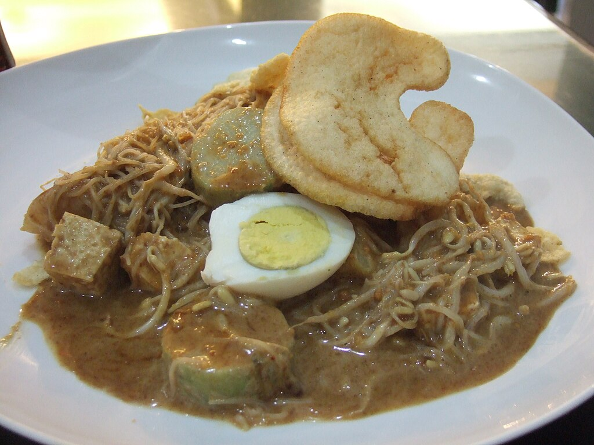
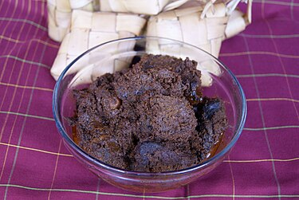
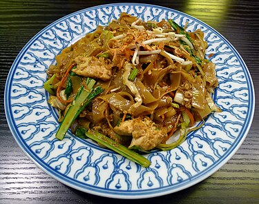
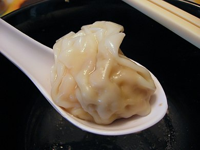
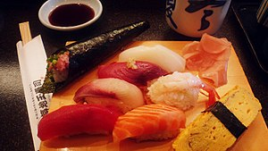
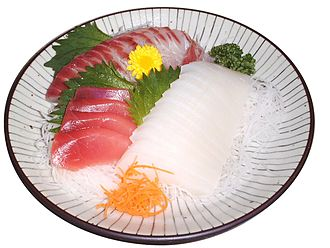
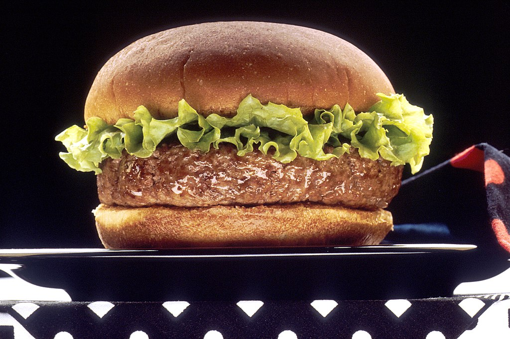
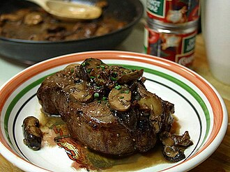
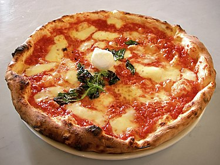

Jenis Makanan di Dunia
Sidebar
Indonesian Food
A. Ketoprak🤤

Ketoprak merupakan makanan khas Indonesia yang menggunakan ketupat sebagai bahan utamanya. Biasanya, ketoprak dijajakan menggunakan kereta dorong di jalan-jalan atau kaki lima. Makanan khas ini banyak ditemui di wilayah Jadetabek dan Kota Cirebon, Jawa Barat.
B. Rendang

Rendang adalah hidangan berbahan dasar daging yang dihasilkan dari proses memasak suhu rendah dalam waktu lama dengan menggunakan aneka rempah-rempah dan santan. Proses memasaknya memakan waktu berjam-jam (biasanya sekitar empat jam) hingga yang tinggal hanyalah potongan daging berwarna hitam pekat dan dedak. Dalam suhu ruangan, rendang dapat bertahan hingga berminggu-minggu. Rendang yang dimasak dalam waktu yang lebih singkat dan santannya belum mengering disebut kalio, berwarna cokelat terang keemasan
C. Nasi Goreng

Nasi goreng adalah makanan berupa nasi yang digoreng dan dicampur dalam minyak goreng, margarin, atau mentega. Biasanya ditambah dengan kecap manis, bawang merah, bawang putih, asam jawa, lada dan bahan lainnya; seperti telur, daging ayam, dan kerupuk. Ada pula nasi goreng jenis lain yang dibuat bersama dengan ikan asin yang juga populer di seluruh Indonesia.
Chinese Food
A. Kwetiau

Kwetiau (Hanzi: 粿條, hanyu pinyin: guǒ tiáo, juga disebut 沙河粉, shā hé fěn) adalah sejenis mie Tionghoa berwarna putih dan pipih yang terbuat dari beras. Kwetiau merupakan makanan yang cukup populer di Indonesia, terutama di Jakarta dan tempat-tempat lain yang banyak didiami warga keturunan Tionghoa.
B. Pangsit

Pangsit (Hokkien: 扁食; dialek Zhangzhou páng sit) adalah makanan tradisional Tiongkok yang berupa daging cincang yang dibungkus lembaran tepung terigu. Setelah direbus sebentar, pangsit umumnya dihidangkan di dalam sup. Selain direbus, pangsit juga bisa digoreng dengan minyak goreng yang banyak hingga seperti kerupuk. Pangsit termasuk salah satu jenis dimsum.
Japanese Food
A. Sushi

Sushi (Jepang: 鮨, 鮓, 寿司, すし; Romaji: sushi) adalah makanan Jepang yang terdiri dari nasi yang dibentuk bersama lauk (neta) berupa makanan laut, daging, sayuran bakar atau sudah dimasak. Nasi susyi mempunyai rasa masam yang lembut karena dibumbui campuran cuka beras, garam, dan gula.
B. Sashimi

Sashimi (刺身) adalah makanan Jepang berupa makanan laut dengan kesegaran prima yang langsung dimakan dalam keadaan mentah bersama penyedap seperti kecap asin, parutan jahe, dan wasabi. Makanan laut segar seperti ikan, kerang, dan udang karang dihidangkan dalam bentuk irisan kecil yang mudah dimakan, sedang udang berukuran kecil ada yang hanya dikupas kulit dan dibuang kepalanya saja.
Western Food
A. Burger

Hamburger atau burger adalah sejenis roti berbentuk bundar yang diiris dua, dan di tengahnya diisi dengan patty yang biasanya diambil dari daging, kemudian sayur-sayuran berupa selada, tomat dan bawang bombai. Sebagai sausnya, hamburger diberi berbagai jenis saus seperti mayones, saus tomat dan sambal, serta moster. Beberapa varian hamburger juga dilengkapi dengan keju dan asinan. Hamburger merupakan makanan siap saji yang populer di Amerika Serikat.
B. Steak

Steak adalah sepotong besar daging, biasanya daging sapi. Daging merah, dada ayam, dan ikan sering kali dipotong menjadi steak. Kebanyakan steak dipotong tegak lurus dengan serat otot, menambah kelegitan daging. Steak biasanya dimasak dengan dipanggang, meskipun dapat digoreng atau di-"broil".
C. Pizza

Pizza (bahasa Italia: pizza) adalah hidangan gurih asal Italia sejenis adonan bundar dan pipih, yang dipanggang di oven dan biasanya dilumuri saus tomat serta keju dengan bahan makanan tambahan lainnya yang bisa dipilih sesuai selera. Keju yang dipakai biasanya mozzarella atau keju pizza, bisa juga parmesan dan beberapa jenis keju lainnya.
©2024 Agnes Olivia. Semua hak cipta dilindungi.